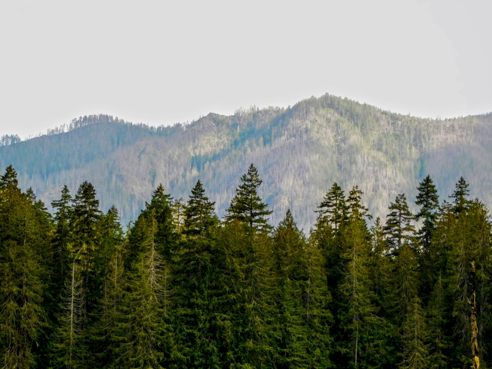
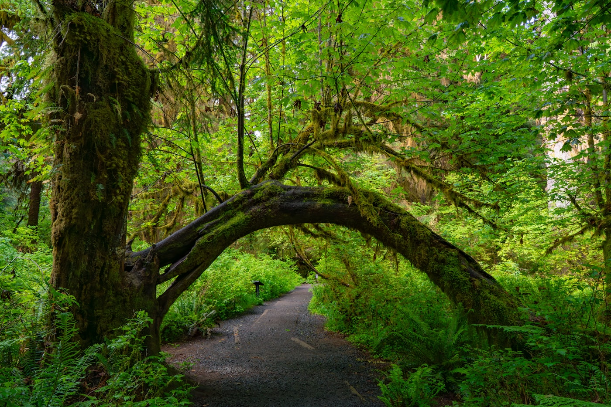

The Olympic Mountains
Geography, Climate, and Geology
The Olympic Mountains are a mountain range on the Olympic Peninsula of the Pacific Northwest of the United States. The mountains are part of the Pacific Coast Ranges. They are not especially high, with Mount Olympus as the highest summit at 7,980 feet (2,432 m).
The eastern slopes rise sharply out of Puget Sound from sea level. The western slopes are separated from the Pacific Ocean by a low coastal plain that is 12 to 22 miles wide. These densely forested western slopes are the wettest place in the 48 contiguous states.
Most of the mountains are protected within Olympic National Park and adjoining segments of Olympic National Forest. The mountains are located in western Washington and spread across Clallam, Grays Harbor, Jefferson, and Mason counties.
Geography
The Olympic Mountains have the form of a domed cluster of steep-sided peaks. They are surrounded by heavily forested foothills and cut by deep valleys. Water surrounds the range on three sides, and the Pacific coastal plain separates the western slopes from the ocean.

The general form of the range is roughly circular, or somewhat horseshoe-shaped. Its drainage pattern is radial, with rivers flowing outward from the central mountains toward the surrounding lowlands and water.
Climate
Precipitation varies greatly across the range. The western slopes are very wet, while the eastern ridges are much drier because they sit in the rain shadow of the mountains.
Mount Olympus is nearly 8,000 feet tall and only about 35 miles from the Pacific Ocean. This steep rise helps create heavy precipitation, with an estimated 240 inches of snow and rain on Mount Olympus each year. The Hoh Rainforest receives about 140 to 170 inches of rain annually.
Areas northeast of the mountains receive far less precipitation. Around Sequim, rainfall can be as low as 16 inches per year. Annual precipitation increases near the edges of the rain shadow, including areas around Port Townsend, the San Juan Islands, and Everett.
About 80 percent of precipitation falls during the winter months. On the coastal plain, winter temperatures usually stay between 28 and 45 degrees Fahrenheit. Summer temperatures often range from 50 to 75 degrees Fahrenheit, with occasional warmer days.
The many snowfields and glaciers come from high precipitation, northern latitude, and the cool Pacific climate. There are about 184 glaciers and permanent ice fields in the Olympic peaks. The most prominent glaciers are on Mount Olympus, though many glaciers in the range have decreased in size in recent decades.
Geology
The Olympic Mountains are made of obducted clastic wedge material and oceanic crust. They are primarily Eocene sandstones, turbidites, and basaltic oceanic crust. Unlike the Cascades, the Olympic Mountains are not volcanic and do not contain native granite.

Millions of years ago, vents and fissures opened under the Pacific Ocean. Lava flowed out and created huge underwater volcanic mountains and ranges called seamounts. As tectonic plates moved, some of the ocean floor was scraped off and pushed against the edge of North America.
This scraped and compressed material helped create the dome that became the Olympic Mountains. The future Olympics were pushed into a corner formed by Vancouver Island and North Cascades microcontinents attached to the western edge of the North America plate.
The Olympics began to rise above the sea about 10 to 20 million years ago. During the Pleistocene, alpine and continental glaciers shaped the range. Valleys such as the Hoh, Queets, and Quinault are U-shaped valleys carved by advancing alpine glaciers.
Continental ice also shaped the surrounding region. The Cordilleran Ice Sheet moved south from Alaska through British Columbia to the Olympics, splitting into the Juan de Fuca and Puget ice lobes as it met the resistant mountains.